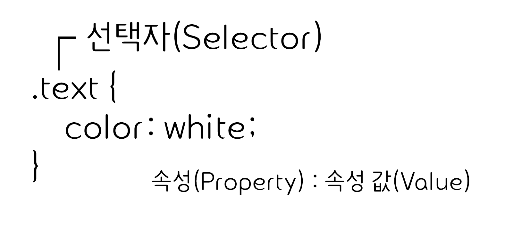
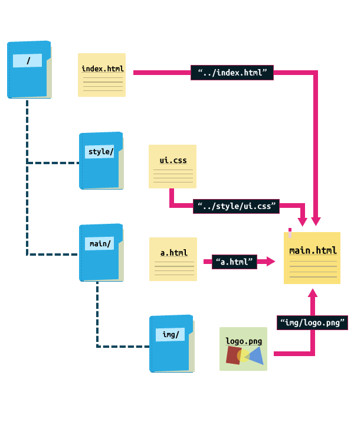

CSS
CSS(CAscading Style Sheets)는 HTML로 작성된 문서를 쓰기위한 스타일 시트 언어입니다.
HTML은 문서의 골격을 이룬다면, CSS는 그 골격에 맞는 디자인 작업 언어라고 생각하면 됩니다.
CSS 선택자
CSS 선택자를 통해 요소를 선택하고 속성을 줄 수 있습니다
id 선택자와 class 선택자
- id 선택자
- 하나의 태그만 식별하기 위한 선택자입니다.
- 하나의 태그에서 하나만 사용할 수 있습니다.
"#"으로 표시합니다.
- class 선택자
- 여러개의 태그를 식별하기 위한 선택자입니다.
- 하나의 태그에서 여러개를 사용할 수 있습니다.
"."으로 표시합니다.
기본 선택자
| 종류 | 예시 | 이름 |
|---|---|---|
| 태그 선택자 | p {color:#fff;} | p 태그를 선택하여 글씨 색을 하얀색으로 변경합니다. |
| 클래스 선택자 | .class {color:#fff;} | class 클래스를 선택하여 글씨 색을 하얀색으로 변경합니다. |
| 아이디 선택자 | #id {color:#fff;} | id 아이드를 선택하여 글씨 색을 하얀색으로 변경합니다. |
| 그룹 선택자 | p, div {color:#fff;} | p 태그와 div 태그를 선택하여 글씨 색을 하얀색으로 변경합니다. |
| 전체 선택자 | * {color:#fff;} | 전체 태그를 선택하여 글씨 색을 하얀색으로 변경합니다. |
계층 선택자
| 종류 | 예시 | 이름 |
|---|---|---|
| 하위 선택자(Descendant Selector) | div p {color:#fff;} | div 태그의 모든 자식 중 p 태그를 모두 선택하여 글씨 색을 하얀색으로 변경합니다. |
| 자식 선택자(Child Selector) | div > p {color:#fff;} | div 태그의 모든 자식 중 첫번째 자식 p 태그를 선택하여 글씨 색을 하얀색으로 변경합니다. |
| 형제 선택자(sibling Selector) | div ~ p {color:#fff;} | div 태그의 인접한 형제 p 태그를 모두 선택하여 글씨 색을 하얀색으로 변경합니다. |
| 인접 형제 선택자(Adjacent Sibling Selector) | div + p {color:#fff;} | div 태그의 인접한 형제 첫번째 p 태그를 선택하여 글씨 색을 하얀색으로 변경합니다. |
속성 선택자
| 종류 | 예시 | 이름 |
|---|---|---|
| [name] | a[href] | a 태그 속성 중에 href가 있으면 선택합니다. |
| [name="value"] | a[href="#header"] | a 태그 href 속성의 값이 '#header'이면 선택합니다. |
| [name~="value"] | a[href~="web"] | a 태그 href 속성의 값이 'web'을 포함한 요소를 선택합니다. |
| [name|="value"] | a[href|="web"] | a 태그 href 속성의 값이 'web'이거나 'web'으로 시작하는 요소를 선택합니다. |
| [name^="value"] | a[href^="web"] | a 태그 href 속성의 값이 'web'으로 시작하는 태그를 선택합니다. |
| [name*="value"] | a[href*="web"] | a 태그 href 속성의 값이 'web'이 포함되어 있는 태그를 선택합니다. |
| [name$="value"] | a[href$="com"] | a 태그 href 속성의 값이 'com'으로 끝나는 태그를 선택합니다. |
가상 요소
| 종류 | 예시 | 이름 |
|---|---|---|
| ::first-line | p:first-line {color:#fff;} | 문단의 첫 줄에 컬러색을 하얀색으로 변경합니다. |
| ::first-letter | p:first-letter {color:#fff;} | 문단의 첫 글자에 컬러색을 하얀색으로 변경합니다. |
| ::before | p:before {content:"시작"} | 문단 시작 부분에 '시작'이라는 요소를 추가합니다. |
| ::after | p:after {content:"끝" | 문단 끝 부분에 '끝'이라는 요소를 추가합니다. |
| ::selection | p:selection {color:#fff;} | 드래그로 선택하였을 경우 글씨 색을 하얀색으로 변경합니다. |
가상 클래스
| 종류 | 예시 | 이름 |
|---|---|---|
| :first-child | li:first-line {color:#fff;} | li 자식 요소 중 첫 번째 자식 요소에게 컬러를 하얀색으로 변경합니다. |
| :last-child | li:last-line {color:#fff;} | li 자식 요소 중 마지막 번째 자식 요소에게 컬러를 하얀색으로 변경합니다. |
| :first-of-type | p:first-of-type {color:#fff;} | 자식 요소 중 p 태그 첫 번째 자식 요소에게 컬러를 하얀색으로 변경합니다. |
| :last-of-type | p:last-of-type {color:#fff;} | 자식 요소 중 p 태그 마지막 번째 자식 요소에게 컬러를 하얀색으로 변경합니다. |
| :nth-child() | li:nth-child(2) {color:#fff;} | li 자식 요소 중 2번째 자식 요소에게 컬러를 하얀색으로 변경합니다. |
| :nth-last-child() | li:nth-last-child(2) {color:#fff;} | li 자식 요소 중 뒤에서 2번째 자식 요소에게 컬러를 하얀색으로 변경합니다. |
| :nth-of-type() | p:nth-of-type(2) {color:#fff;} | 자식 요소 중 p 태그 2번째 자식 요소에게 컬러를 하얀색으로 변경합니다. |
| :nth-last-of-type() | p:nth-last-of-type(2) {color:#fff;} | 자식 요소 중 p 태그 뒤에서 2번째 자식 요소에게 컬러를 하얀색으로 변경합니다. |
| :only-child | :only-child {color:#fff;} | 자식 요소 중 유일한 태그 자식 요소에게 컬러를 하얀색으로 변경합니다. |
| :only-of-type | p:only-of-type {color:#fff;} | 자식 요소 중 유일한 p 태그 자식 요소에게 컬러를 하얀색으로 변경합니다. |
| :not() | li:not(:nth-child(2)) {color:#fff;} | li 자식 요소 중 2번째 자식 요소를 제외하고 컬러를 하얀색으로 변경합니다. |
| :root | :root {color:#fff;} | 기본 루트 요소의 컬러를 하얀색으로 변경합니다. |
| :empty | :empty {color:#fff;} | 컨텐츠 요소가 없는 요소의 컬러를 하얀색으로 변경합니다. |
링크 가상 클래스
| 종류 | 예시 | 이름 |
|---|---|---|
| :link | a:link {color:#fff;} | 방문하지 않는 링크의 글씨 색을 하얀색으로 설정합니다. |
| :visited | a:visited {color:#fff;} | 방문한 링크의 글씨 색을 하얀색으로 설정합니다. |
| :hover | a:hover {color:#fff;} | 링크 위에 마우스를 올려 놓았을 경우 글씨 색을 하얀색으로 설정합니다. |
| :active | a:active {color:#fff;} | 링크가 활성화되었을 경우 글씨 색을 하얀색으로 변경합니다. |
폼 관련 선택자
| 종류 | 예시 | 이름 |
| :checked | input:checked {color:#fff;} | input 태그가 체크되었을 때 글씨 색을 하얀색으로 변경합니다. |
| :focus | input:link {color:#fff;} | input 태그에 초점이 맞추어졌을 때 글씨 색을 하얀색으로 변경합니다. |
| :enabled | input:enabled {color:#fff;} | input 태그가 사용 가능하면 글씨 색을 하얀색으로 변경합니다. |
| :disabled | input:disabled {color:#fff;} | input 태그가 사용 가능하지 않으면 글씨 색을 하얀색으로 변경합니다. |
CSS 색상
CSS 를 통해 색상을 표현하는 방법은 16진수, 색상이름,RGBA,HSLA표기법이있습니다.
RGB 모드
RGB color 모드는 빛의 삼원색인 빨강 , 초록 , 파랑 을 섞어 색을 만듭니다. 색을 섞을수록 점점 밝아지므로 '가산 혼합' 이라 부릅니다. 모니터 화면용 작업에서 기본적으로 사용하는 색상 모드 입니다.
CMYK 모드
CMYK color 모드는 시안 , 마젠타 , 노랑 , 검정의 원색을 섞어서 색상을만듭니다. 물감처럼 색을 섞을수록 점점 어두워지므로 '감산 혼합'이라 부릅니다. 출력용 이미지를 작업 할 때 사용하는 모드 입니다.
16진수 표기법
웹 문서에서 색상을 표현하는 방법은 16진수로 표현하는 방법입니다. 두자리씩 묶어서 #RRGGBB 형식으로 표현하며, RR은 빨간색, GG는 초록색, BB는 파란색의 양을 표현합니다. 각 색상이 하나도 섞이지 않았음은 00부터 가득 섞였음은 FF까지 사용할 수 있습니다.
색상이름 표기법
색상 이름을 이용하여 색을 표현할 수 있습니다. 가장 기본적인 16가지를 포함하여 216가지의 색상 이름 표기법이 있습니다.
RGB와RGBA 표기법
웹 문서에서 색상을 표현하는 RGB(255,255,255)는 십진수를 이용하여 표현합니다. 색이 하나도 섞이지 않았을 때에는 0으로 표시하고, 가득 섞였을 때에는 255로 포현합니다. 숫자는 색상의 양을 나타내고a는 투명도(Alpha) 를 나타냅니다. 투명도 0과 1사이로 표현합니다.
HSL와HSLA 표기법
웹 문서에서 색상을 표현하는 HSL은 색상(HUE), 채도(saturation), 밝기(lightness)를 나타냅니다. 색상은 둥글게 배치한 색상환으로 표시하고 0도와 360도에는 빨간색, 120도에는 초록색, 240도에는 파란색이 배치됩니다. 채도가 0%이면 회색톤 100%이면 순색으로 표시됩니다. 밝기는 0%에서는 가장 어둡고 100%애서는 가장 밝습니다.
CSS 선언
HTML 문서의 스타일을 선언하는 방법은 3가지가 있습니다.
- 내부 스타일 (Internal Style Sheet): head 태그 안에 선언하는 방법
- 외부 스타일 (External Style Sheet): 외부 파일로 연결하는 방법
- 인라인 스타일 (Inline Style Sheet): 태그에 직접 연결하는 방법
<!DOCTYPE html>
<html lang="en">
<head>
<meta charset="UTF-8">
<title>Document</title>
<!-- 내부 스타일 -->
<style>
h1 {color: #fff;}
</style>
<!-- 외부 스타일 -->
<link rel="stylesheet" href="경로">
</head>
<body>
<!-- 인라인 스타일 -->
<h1 style="color: #fff"></h1>
</body>
</html>
float으로 인한 깨짐 현상
fliat 을 쓰게되면 영역의 높이 값이 0으로 줄어들기 때문에 영역을 유지하는 방법이 필요합니다.
- 깨지는 영역에 똑같이
float:left를 사용합니다.- 모든 영역에 float을 사용하게 되고, 레이아웃이 복잡하면 정확이 어디가 깨지는지 알 수가 없습니다.d - float의 성질을 차단하는
clear:both를 사용합니다.- 레이아웃이 복잡해지면 어디가 깨지는지 알 수가 없습니다. float을 사용한 부모 박스 영역에overflow:hidden을 사용합니다.- 가상요소
clearfix만들어서 영역 깨짐 현상을 막아줌니다.
절대주소
절대주소란 최초의 시작점으로 경유한 경로를 전부 기입하는 방식입니다. 'http://'부터 시작해서 (또는 'https://') 전체의 주소를 다 적는 방식입니다.
상대주소
상대 주소는 해당 파일을 기준으로 주소를 찾는 것 입니다.
이미지 표현 방법
웹 문서에 이미지를 표현하는 방법은 img 태그와 background를 통해 설정할 수 있습니다.
- img 태그로 표현하는 방법 : 이미지에 의미가 있는 경우(로고,배너)
- background로 표현하는 방법 : 이미지에 의미가 없는 경우 (배경 장식)
img 태그로 이미지 표현하기(대체문자 표현 O)


background 속성으로 이미지 표현하기(대체문자 표현X)
이미지 스포라이트를 이용한 이미지 표현 (대체문자 표현X)
이미지 스프라이트
아이콘 또는 장식을 위한 이미지 요소들은 스프라이트 기법을 활용하여 파일의 사이즈를 최소화하고 효율성을 높일 수 있습니다.
- 여러번의 서버 요청을 한번으로 줄일 수 있습니다.
- 이미지 수정이나 관리가 간편합니다.
- 웹 접근성을 준수하기 위해서는 IR 효과를 설정해야 합니다.
IR 효과
IR(Image Replacement) 기법은 이미지 대체 텍스트를 제공하기 위한 CSS 기법으로 다양한 기법을 사용하여 이미지 대체 텍스트를 제공할 수 있습니다.
Phark Method
의미 있는 이미지의 대체 텍스틀를 제공하는 경우 : 이미지로 대체할 엘리먼트에 배경이미지를 설정하고 글자는 text-indent를 이용하여 화면 바깥으로 빼내어 보이지 않게 하는 방법
PWA IR
의미 있는 이미지의 대체 텍스트로 이미지를 off시에도 대체 텍스트를 보여주고자 할때: 이미지로 대체할 엘리먼트에 배경 이미지를 설정하고 글자는 span태그로 감싼 후 z-lndex -1 을 이용하여 화면에 안보이게 처리하는 방법
Screen Out
대체 텍스트가 아닌 접근성을 위한 숨김 텍스트를 제공할 때 사용합니다.
이미지 타입
프로젝트 종류에 따라 여러가지 이미지 타입을 사용할 수 있습니다.
| 종류 | PC Web | Mobile Web | Mobile app | 투명 효과 | 용량 | 애니메이션 |
|---|---|---|---|---|---|---|
| GIF | O | O | X | △ | 저 | O |
| JPG | O | O | X | X | 중 | X |
| PNG-8 | X | O | △ | △ | 저 | X |
| PNG-24 | △ | O | O | O | 고 | X |
| SVG | O | O | O | O | 저 | O |
- Gif:GIF 는 이미지를 저장해도 데이터가 손실 되지 않는 무손실 압축을 사용합니다. Indexed color 속성을 가지고 있어서 최대 256가지의 컬러로만 저장 할 수 있습니다.
- JPG:JPEG 이미지는 인간의 눈으로 확인 할 수 없는 정보를 제거하는 방법으로 디테일한 사진 이미지를 가능한한 작게 만들어 놓은 압축된 디자인 파일었습니다. 식이 많이 들어가거나 화려한 이미지는 JPG로 표현합니다.
- PNG-8:
- PNG-24:PNG 24는 JPEG처럼 수천가지의 컬러를 가지면서 무손실 압축인 훌륭한 포맷입니다.
- SVG:
컨텐츠 요소를 보이지 않게 하는 방법
컨텐츠 요소를 보이지 않게 하는 방법은 display, opacity,visibility 가있습니다.
| 종류 | 반대 | 영역 | 애니메이션 |
|---|---|---|---|
display:none |
display:block |
영역 사라짐 | X |
visibility:hidden |
visibility:visible |
영역 유지 | X |
opacity:0 |
opacity:1 |
영역 유지 | O |
컨텐츠 요소를 가운데 오게 하는 방법
반응형을 작업할 때 어떤 요소를 가운데 오게 하는 방법은 상당히 중요하고 방법도 여러가지가 있습니다.
가장 기본적인 방법이지만 이 방법은 한 줄(요소)일 경우에서만 해당이 됩니다.
- 부모요소(인라인구조) : text-align : center; line-height: (height값과 동일하게)
- 요소(블록구조) : margin:0 auto; line-height: (height값과 동일하게)
요소의 성질을 table로 변환시켜서 가운데 정렬을 하는 방법이지만 table자체를 레이아웃에 많이 사용하지 않기 때문에 잘 쓰지 않는 방법입니다.
- 부모요소 : display:table;
- 자식요소 : display:table-cell, text-align:center; vertical-align:middle;
절대 요소를 이용한 가운데 정렬방법이며, 제일 흔하게 쓰이지만 단점은 영역이 없어지는 것이 단점이어서 반응형을 할 때 사용하기 불편한 점이 있습니다.
- 부모요소 : position:relative;
- 자식요소 : position:absolute; top:50%; left: 50%; margin-top:-(자식 요소 높이값의 반); margin-left:-(자식 요소 가로값의 반);
만약 자식요소의 가로값과 세로 값을 모르고 유동적인 경우에 절대 요소를 사용하여 가운데로 오는 정렬방법입니다.
- 부모요소 : position:relative;
- 자식요소 : position:absolute; top:50%; left: 50%; transform:translate(-50%, -50%);
절대 요소를 이용한 가운데 정렬 방법이지만 흔하게 쓰이지는 않습니다.
- 부모요소 : position:relative;
- 자식요소 : position:absolute; top:0; left:0; top:0; right:0; margin: auto;
CSS3를 이용한 방법이지만 최신 브라우저 이외에서는 작동하지 않는 단점이 있지만 표준화 된다면 앞으로 많이 쓰일 방법입니다.
- 부모요소 : height 값 설정
- 자식요소 : display: flex; justify-content: center; align-items: center;
margin
margin속성은 요소의 바같쪽 여백을 설정합니다.
margin-top: 10px;요소의 위쪽 바깥 여백을 설정margin-right: 11px;요소의 오른쪽 바깥 여백을 설정margin-bottom: 12px;요소의 아래쪽 바깥 여백을 설정margin-left: 13px;요소의 왼쪽 바깥 여백을 설정margin: 10px 11px 12px 13px;요소의 위쪽/오른쪽/아래쪽/왼쪽 바깥 여백을 설정 순서는 시계방향margin: 10px 11px 12px;요소의 위쪽(10px)/왼쪽,오른쪽(11px)/아래쪽 (12px)margin: 10px 11px;요소의 위쪽,아래쪽(10px)/왼쪽,오른쪽(11px)margin: 10px;요소의 위쪽/오른쪽/아래쪽/왼쪽(10px)margin: auto;자동값 또는 기본값 또는 초기값margin: 0 auto;블록 구조를 가운데 정렬할 때 사용
padding
padding속성은 요소의 안쪽 여백을 설정합니다.
padding-top: 10px;요소의 위쪽 안쪽 여백을 설정padding-right: 11px;요소의 오른쪽 안쪽 여백을 설정padding-bottom: 12px;요소의 아래쪽 안쪽 여백을 설정padding-left: 13px;요소의 왼쪽 안쪽 여백을 설정padding: 10px 11px 12px 13px;요소의 위쪽/오른쪽/아래쪽/왼쪽 바깥 여백을 설정 순서는 시계방향padding: 10px 11px 12px;요소의 위쪽(10px)/왼쪽,오른쪽(11px)/아래쪽 (12px)padding: 10px 11px;요소의 위쪽,아래쪽(10px)/왼쪽,오른쪽(11px)padding: 10px;요소의 위쪽/오른쪽/아래쪽/왼쪽(10px)
wldth
wldth 속성은 요소의 가로 값을 설정합니다.
wldth: 10pxwldth: auto자동값 또는 초기값
height
height 속성은 요소의 세로 값을 설정합니다.
height: 10pxheight: auto자동값 또는 초기값
text-align
text-align 속성은 텍스트의 정렬 방식을 설정합니다.
text-align: left왼쪽 정렬text-align: right오른쪽 정렬text-align: center가운데 정렬text-align: justify양쪽 정렬
font
font 속성은 폰트의 다양한 속성을 설정합니다
fontfont-family: 속성은 선택된 요소에 우선 순위가 지정된 font family 이름과 generic family 이름을 지정할 수 있게 해줍니다.font-size: 글자 크기를 정하는 속성입니다.font-size-adjust: 소문자를 기준으로 폰트 크기를 설정합니다.font-stretch: 폰트의 굵기를 정의합니다.font-style: 글자 모양을 정하는 속성으로, 기울임 여부를 정합니다.font-variant: 소문자를 작은 대문자, 즉 소문자 크기의 대문자로 바꾸는 속성입니다. 따라서 한글에서는 의미 없는 속성입니다.font-weight: 글자의 굵기를 정합니다.@font-face: 외부 폰트 적용합니다.
line-height
line-height는 줄 높이를 정하는 속성입니다.
line-height: normal ;:웹브라우저에서 정한 기본값입니다. 보통 1.2입니다.line-height: length;:길이로 줄 높이를 정합니다.line-height: number;:글자 크기의 몇 배인지로 줄 높이를 정합니다.line-height: percentage ;:글자 크기의 몇 %로 줄 높이로 정합니다.line-height: initial ;:기본값으로 설정합니다.line-height: inherit ;:부모 요소의 속성값을 상속받습니다.
text-transform
text-transform은 대문자로 또는 소문자로 바꾸는 속성입니다.
text-transform: none ;:입력된 그대로 출력합니다.text-transform: capitalize;:단어의 첫번째 글자를 대문자로 바꿉니다.text-transform: uppercase ;:모든 글자를 대문자로 바꿉니다.text-transform: lowercase ;:글모든 글자를 소문자로 바꿉니다.text-transform: initial ;:기본값으로 설정합니다.text-transform: inherit ;:부모 요소의 속성값을 상속받습니다.
text-decoration
text-decoration 태그는 글씨의 장식(선) 색을 지정합니다.
text-decoration: none;선을 만들지 않습니다.text-decoration: line-through;글자 중간에 선을 만듭니다.text-decoration: overline;글자 위에 선을 만듭니다.text-decoration: underline;글자 아래에 선을 만듭니다.text-decoration: initial;기본값으로 설정합니다.text-decoration: inherit;부모 요소의 속성값을 상속받습니다.
float
float: left;: 요소가 자신의 포함(containing) 블록의 좌측에 부동(float, 떠움직여)해야 함을 나타내는 키워드입니다.float: right;: 요소가 자신의 포함(containing) 블록의 우측에 부동(float, 떠움직여)해야 함을 나타내는 키워드입니다.float: none;: 요소가 부동하지 않아야 함을 나타내는 키워드입니다.float: inline-start;:요소가 자신의 포함 블록의 시작쪽에 부동해야 함을 나타내는 키워드입니다. 즉, ltr(left to right) 스크립트 상에서 왼쪽 그리고 rtl(right to left) 스크립트 상에서는 오른쪽.float: inline-end;:요소가 자신의 포함 블록의 끝쪽에 부동해야 함을 나타내는 키워드입니다. 즉, ltr 스크립트 상에서 오른쪽 그리고 rtl 스크립트 상에서는 왼쪽.
background
background 속성은 백그라운드 이미지 속성 값을 설정합니다.
- background
background-attachment: 백그라운드 이미지 고정여부를 설정합니다.background-attachment: scrollbackground-attachment: fixedbackground-attachment: local
- background-blend-mode : 백그라운드 배경을 혼합했을때의 상태를 설정한다.
background-blend-mode: nomal;배경색에 상관하지 않고 최상단 색을 사용한다. 두 장의 불투명한 종이를 겹친 것과 같다.background-blend-mode: multiply;최종 색은 전경과 배경색을 곱한 값으로 검은 레이어는 최종 레이어를 검은 색으로 만들고, 하얀 레이어는 아무런 변화도 주지 않는다. 투명한 필름에 프린트한 이미지를 서로 겹친 것과 같다.background-blend-mode: screen;최종 색은 전경과 배경색을 각각 반전한 후 서로 곱해 나온 값을 다시 반전한 값이다. 검은 레이어는 아무런 변화도 주지 않고, 하얀 레이어는 최종 레이어를 하얗게 만든다. 프로젝터 두 대로 이미지를 겹친 것과 같다.background-blend-mode: overlay;배경색이 더 어두운 경우 multiply, 더 밝은 경우 screen을 적용한다. hard-light와 같지만 배경과 전경을 뒤집은 것이다.background-blend-mode: darken;최종 색은 각각의 색상 채널에 대해 제일 어두운 값을 취한 결과이다.background-blend-mode: lighten;최종 색은 각각의 색상 채널에 대해 제일 밝은 값을 취한 결과이다.background-blend-mode: color-dodge;최종 색은 배경색을 전경색의 역으로 나눈 결과이다. 검은 전경색은 아무런 변화도 주지 않는다. 전경색이 배경색의 역인 경우 제일 밝은 색이 된다. screen과 유사하지만, 전경색의 밝기가 배경색과 동일하기만 해도 최대의 밝기를 가진 색을 반환한다.background-blend-mode: saturation;최종 색은 전경색의 채도를 가지며 배경색의 색조와 밝기를 가진다. 색조 없는 순수한 회색 배경으로는 아무런 효과도 없다.background-blend-mode: color;최종 색은 전경색의 색조와 채도를 가지며 배경색의 밝기를 가진다. 회색조를 유지하므로 전경을 색칠할 때 사용할 수 있다.background-blend-mode: luminosity;최종 색은 전경색의 밝기를 가지며 배경색의 색조와 채도를 가진다. color와 동일하지만 배경과 전경을 뒤집은 것이다.
- background-clip: 백그라운드 이미지 영역 속성를 설정합니다.
background-clip: border-boxbackground-clip: padding-boxbackground-clip: content-box
- background-color: 백그라운드 컬러를 설정합니다.
background-color: color값background-color: transparent ;:배경색이 없습니다.background-color: color ;:색을 정합니다.background-color: initial ;:기본값으로 설정합니다.background-color: inherit ;:부모 요소의 속성값을 상속받습니다.
- background-image: 백그라운드 이미지을 설정합니다.
background-image: url0background-image: none
- background-orgin: 백그라운드 방향을 설정합니다.
background-orgin: border-boxbackground-orgin: padding-boxbackground-orgin: content-box
- background-postion: 백그라운드 위치를 설정합니다.
background-postion: left | right | bottom | topbackground-postion: percentagebackground-postion: length
- background-repeat: 백그라운드 반복 여부를 설정합니다.
background-repeat: repeat;기본값(x축, y 축 반복background-repeat: repeat-x;이미지가 x축으로 반복background-repeat: repeat-y;이미지가 y축으로 반복background-repeat: no-repeat;이미지가 하나만 나오게 설정
- background-size: 백그라운드 사이즈를 설정합니다.
background-size: auto;background-size: contain;background-size: cover;background-size: percentage;background-size: length;
border
border 속성은 테두리를 설정합니다.
- border
- border-color
border-right-colorborder-top-colorborder-left-colorborder-bottom-color
- border-width
border-right-widthborder-top-widthborder-left-widthborder-bottom-width
- border-style
border-right-styleborder-top-styleborder-left-styleborder-bottom-style
- border-image
border-image-outsetborder-image-repeatborder-image-sliceborder-image-sourceborder-image-width
- border-radius
border-top-radiusborder-top-radiusborder-bottom-left-radiusborder-bottom-right-radius
position
position는 태그를 어떻게 위치시킬지를 정의하며, 아래의 5가지 값을 갖습니다
position-static: 기본값, 다른 태그와의 관계에 의해 자동으로 배치되며 위치를 임의로 설정해 줄 수 없습니다.position-absolute: 절대 좌표와 함께 위치를 지정해 줄 수 있습니다.position-relative: 원래 있던 위치를 기준으로 좌표를 지정합니다.position-fixed: 스크롤과 상관없이 항상 문서 최 좌측상단을 기준으로 좌표를 고정합니다.
display
display 속성은 요소를 어떻게 보여줄지를 결정합니다. 주로 4가지 속성값이 쓰이는데, 태그마다 기본값이 다릅니다.
display:none: 보이지 않음display:block: 블록 요소로 변경display:inline: 인라인 요소로 변경display:inline-block: 블록 요소,인라인 요소로 변경
z-index
position 속성을 이용하면 요소를 겹치게 놓을 수 있습니다. 이때 요소들의 수직 위치를 z-index 속성으로 정합니다. 값은 정수이며, 숫자가 클 수록 위로 올라오고, 숫자가 작을 수록 아래로 내려갑니다.
text-indent
문단의 첫번째 줄을 지정한 길이만큼 들여쓰기 합니다.
- 들여쓰기와 내어쓰기는 text-indent 속성으로 만듭니다.
- 값이 양수이면 들여쓰기, 값이 음수이면 내어쓰기가 됩니다.
- 기본값은 0입니다.
- 내어쓰기를 할 때는 왼쪽에 여백을 적절히 줍니다.
vertical-align
vertical-align은 텍스트를 수직으로 정렬하는 속성입니다.
vertical-align: base:기본값으로 부모 요소의 baseline 에 맞춥니다vertical-align: sub:아래첨자에 기준을 맞춰서 정렬합니다.vertical-align: super:위첨자 기준으로 맞춰서 정렬합니다.vertical-align: text-top: 요소 상단을 부모 font 의 상단에 맞춥니다.vertical-align: text-bottom:요소 하단을 부모 font 의 하단에 맞춥니다.vertical-align: middle:부모 요소의 중앙으로 맞춥니다.vertical-align: top:부모 요소의 상단으로 맞춥니다.vertical-align: bottom:부모 요소의 하단으로 맞춥니다.vertical-align: 길이값:0px 는 baseline 과 같은 값입니다. 0px을 기준으로 길이값을 통해 위와 아래로 위치를 조절할 수 있습니다.vertical-align: %: 0% 는 baseline 과 같은 값입니다. 길이값과 마찬가지로 0을 기준으로 아래 위로 위치를 조절할 수 있습니다.
overflow
overflow속성은 요소내의 컨텐츠가 너무 커서 요소내에 모두 보여주기 힘들때 그것을 어떻게 보여줄지를 지정합니다.
overflow: normal;기본 값입니다. 넘칠 경우 상자밖으로 보여집니다.overflow: hidden;넘치는 부분은 잘려서 보이지않습니다.overflow: scroll;스크롤바가 추가되어 스크롤할 수 있습니다.(가로, 세로 모두 추가 됩니다.)overflow: auto;컨텐츠 량에 따라 스크롤바를 추가할지 자동으로 결정됩니다.( 필요에 따라 가로, 세로 별도로 추가될 수도 있습니다.)
text-overflow
text-overflow속성은 박스내의 내용이 넘칠때 텍스트를 어떻게 처리할지 지정하는 속성입니다.
text-overflow: clip;기본 값입니다. 넘칠 경우 텍스트를 자릅니다.text-overflow: ellipsis;넘치는 부분은 생략부호(...)로 표시합니다.text-overflow: string;넘치는 부분을 지정한 문자열로 표시합니다.
white-space: nowrap;
white-space속성은 요소내에 공백을 어떻게 처리할지 지정하는 속성입니다.
white-space: normal;기본 값, 공백을 여러개 넣어도 공백 1개만 표시, 글이 길어지면 텍스트가 자동 줄바꿈이 됩니다.white-space: nowrap;공백을 여러개 넣어도 1개만표시, 텍스트가 길어도 줄바꿈 되지 않고 같은줄에 계속 표시됩니다.white-space: pre;공백을 코드에 있는 그대로 표시함.pre태그처럼 행동함. 코드에 줄바꿈이 없다면 줄바꿈이 되지 않습니다.white-space: pre-wrap;공백을 코드에 있는 그대로 표시함. 코드에 줄바꿈이 없어도 자동 줄바꿈이 됨.white-space: pre-line;공백을 여러개 넣어도 1개만 표시. 코드에 줄바꿈이 없어도 자동 줄바꿈이 되며, 코드에 줄바꿈이 있을 때도 그대로 표시
overflow-x,y
overflow-x 속성은 x축의 내용이 넘칠때, overflow-y 속성은 y축의 내용이 넘칠때 어떻게 보여줄지 지정합니다.
overflow-x,y: visible;기본값으로 내용이 잘리지 않음, 넘치는 내용은 밖으로 흘러넘침overflow-x,y: hidden;밖으로 넘치는 내용은 잘립니다.overflow-x,y: scroll;내용이 잘리고 스크롤바가 나타납니다.overflow-x,y: auto;내용이 잘리고 필요할때만 스크롤바가 나타납니다.
visibility
visibility 속성은 태그의 가시성을 결정합니다.
visibility: visible;보이게합니다visibility: hidden;숨깁니다.visibility: collapse;겹치도록 지정합니다
box-sizing
내용 영역의 폭(width)와 높이(height)는 패딩(Padding)과 보더(Border)를 포함한 범위가 됩니다.
- content-box : 콘텐트 영역을 기준으로 크기를 정합니다.
- border-box : 테두리를 기준으로 크기를 정합니다.
- initial : 기본값으로 설정합니다.
- inherit : 부모 요소의 속성값을 상속받습니다.
display: box;
display: box;는 블록요소에서 float 대신 사용할 수 있습니다. 또한 블록을 수직, 수평으로 배치하거나 역순으로 배열하거나 임의로 배치 순서를 바꿔줄 수도 있습니다. 반응형 웹을 위한 구성에는 단순히 float를 사용하는 것보다 많은 장점들이 있기 때문에 많이 사용하는 속성입니다. 특히 iOS나 안드로이드 같은 모바일 환경에서 지원되고 있기 때문에 모바일 웹 사이트를 제작할 때 유용합니다.
각 브라우저별 태그 지정 방법
- IE : -ms-
- Firefox : -moz-
- Safari, Chrome : -webkit-
box-orient
box-orient 속성은 박스의 흐르는 방향을 지정합니다.
box-orient: horizontal;: 가로로 지정box-orient: vertical;: 세로로 지정box-orient: inline-axis;: 인라인축으로 지정(수평방향)box-orient: block-axis;: 블럭축으로 지정(수직방향)
line-clamp
line-clamp속성은 블록요소의 콘텐츠를 지정한 줄 수만큼으로 제한합니다.
display 속성을 -webkit-box 또는 -webkit-inline-box로, 그리고 -webkit-box-orient 속성을 vertical로 설정한 경우에만 동작합니다. -webkit-line-clamp만 사용하는 경우, 말줄임표는 노출되나 넘친 콘텐츠가 숨겨지지 않으므로 대개 overflow 속성 또한 hidden으로 설정해야 합니다.
srcset
img 태그의 srcset 속성은 각각 다른 환경에서 사용될 이미지 소스를 명시합니다.
- 브라우저가 사용할 수 있는 이미지 소스를 나타내는 하나 이상의 문자열을 콤마(,)로 결합한 리스트를 속성값으로 가집니다.
- 각 이미지 소스를 나타내는 문자열은 다음과 같이 구성됩니다.
- 각 이미지 소스를 나타내는 문자열은 다음과 같이 구성됩니다.
- 이미지에 대한 URL
- 옵션으로, 공백 문자(whitespace)를 추가한 후
- 너비 기술자(width descriptor) 또는 뒤에 ‘w’문자가 추가된 양의 정수 : 너비 기술자는 유효한 픽셀 밀도(pixel density)를 계산하기 위해 sizes 속성에서 주어진 소스의 크기에 의해 나눠집니다.
- 픽셀 밀도 기술자(pixel density descriptor) : 뒤에 ‘x’문자가 추가된 양의 부동 소수점 수 : 만약 픽셀 밀도 기술자가 명시되지 않는다면, 소스는 기본 기술자인 ‘1x’로 할당됩니다.
cursor
cursor 속성을 이용하면 해당 태그 위에 위치하는 마우스 커서의 모양을 바꿀 수 있다.
Auto
Crosshair
Default
Pointer
Move
e-resize
ne-resize
nw-resize
n-resize
se-resize
sw-resize
s-resize
w-resize
Text
Wait
Help